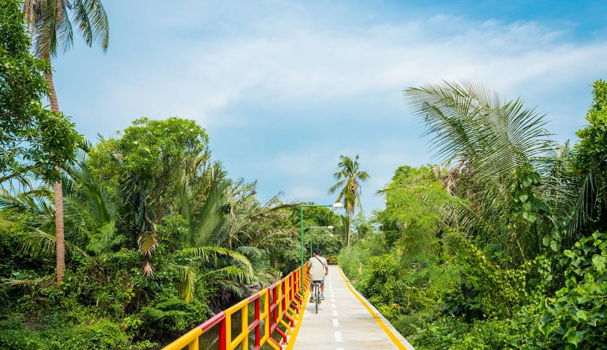
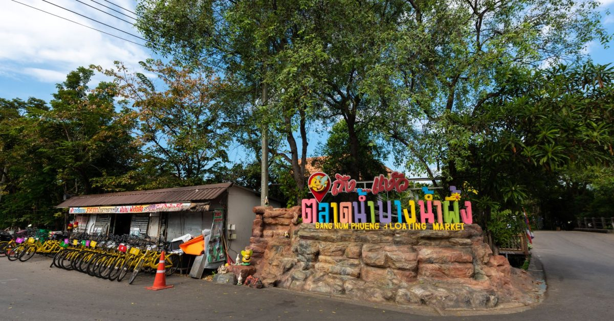
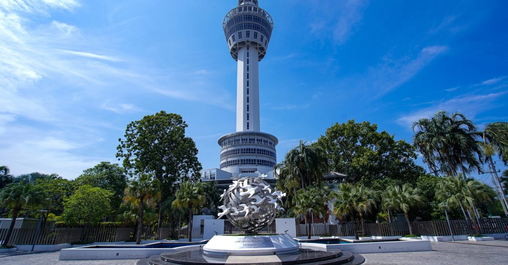

วันหยุดสุดสัปดาห์ไม่ต้องขับไปไกลจากกรุงเทพก็มีกิจกรรมและสถานที่เที่ยวสุดฮิตให้ไปกัน เรารวมมาให้แล้วสำหรับ 10 ที่กินที่เที่ยวบางนา-สมุทรปราการ ครบจบไม่ว่าจะเป็นสายชิลล์ สายท่องธรรมชาติ สายคอนเทนต์ หรือสายตี้ รับรองว่าถูกใจทุกคนแน่นอน ไปดูกันเลย!
เรียนรู้เพิ่มเติม
สถานที่แนะนำ

1.บางกระเจ้า

2. ตลาดน้ําบางน้ําผึ้ง

3. หอชมเมือง สมุทรปราการ